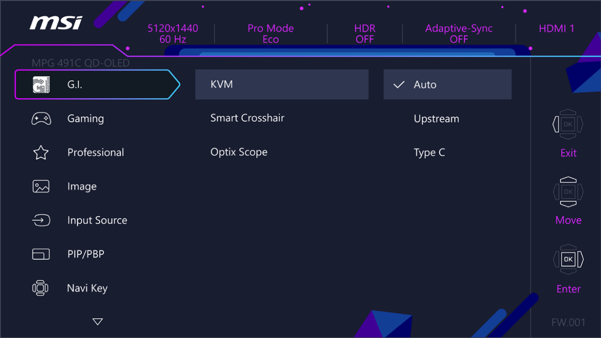

OSD Menus

 Important
Important
The following settings will be grayed out when HDR signals are received:
- Night Vision
- AI Vision
- Low Blue Light
- Brightness
- Contrast
- Color Temperature
- Optix Scope
- PIP/PBP
G.I.
| 1st Level Menu | 2nd/3rd Level Menu | Description | |||||||
|---|---|---|---|---|---|---|---|---|---|
| KVM | Auto |
∙
Auto allows the monitor to automatically switch between USB input sources, such as keyboards,
mice or other USB devices. ∙ Users can also designate Upstream port or USB Type-C as the only USB signal source. |
|||||||
| Upstream | |||||||||
| Type C | |||||||||
| Smart Crosshair | Icon | None |
∙
Through AI algorithm, this function enhances the visibility of in-game crosshair. ∙ Users can select the color and position of the crosshair. |
||||||
| Color | White | ||||||||
| Red | |||||||||
| Auto | |||||||||
| Position | |||||||||
| Reset | |||||||||
| Optix Scope | Scope Size | Small |
∙
The center point will zoom in when Optix Scope is enabled. ∙ Smart Crosshair and Optix Scope can be enabled at the same time. ∙ Activating Optix Scope will affect:
|
||||||
| Medium | |||||||||
| Large | |||||||||
| Scope Ratio | x1.5 | ||||||||
| x2 | |||||||||
| x4 | |||||||||
| OFF | |||||||||
| ON | |||||||||
Input Source
| 1st Level Menu | 2nd Level Menu | Description |
|---|---|---|
| HDMI™ 1 | ∙ Users can adjust Input Source in any mode. | |
| HDMI™ 2 | ||
| DP | ||
| Type C | ||
| Auto Scan | OFF |
Users can use the Navi Key to select Input Source at below status: • While “Auto Scan” is set to “OFF” with the monitor at power saving mode; • While “No Signal” message box is shown on the monitor. |
| ON | ||